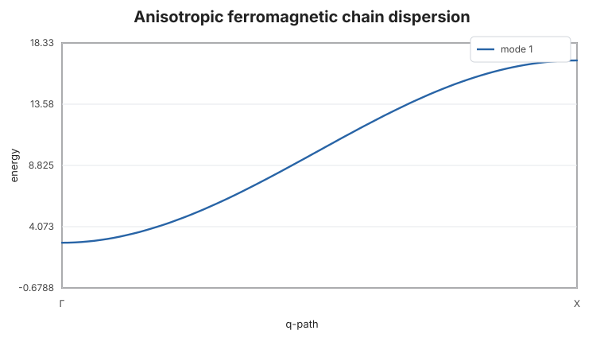
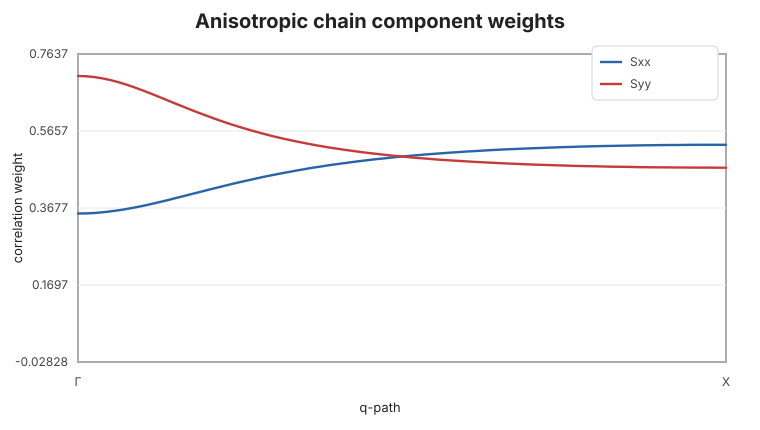

Anisotropic Ferromagnetic Chain
This example replaces the isotropic nearest-neighbor matrix with a diagonal anisotropic exchange matrix. The ordered moment is along z, so the transverse components carry different weights.
using SpinWave
model = SpinModel(lattice([1, 1, 1]))
addsite!(model, :A, [0, 0, 0]; spin=1, moment=[0, 0, 1])
addmatrix!(
model,
:Jdiag,
exchange_matrix([
-3.0 0.0 0.0
0.0 -4.0 0.0
0.0 0.0 -5.0
]),
)
addbond!(model, :Jdiag, :A, :A, [1, 0, 0])
path = qpath([[0, 0, 0], [0.5, 0, 0]]; points=81, labels=["Γ", "X"])
spec = spinwave(model, path)
samples = [1, 21, 41, 61, 81]
round.(spec.energies[:, samples]; digits=4)1×5 Matrix{Float64}:
2.8284 5.0005 10.0 14.933 16.9706
The raw correlation tensor keeps component information before any plotting or grid broadening step. Here the transverse Sxx and Syy weights differ because the exchange matrix is anisotropic:
sx = real.(spec.correlations[1, 1, 1, :])
sy = real.(spec.correlations[2, 2, 1, :])
round.(hcat(sx[samples], sy[samples]); digits=4)5×2 Matrix{Float64}:
0.3536 0.7071
0.4343 0.5757
0.5 0.5
0.5242 0.4769
0.5303 0.4714